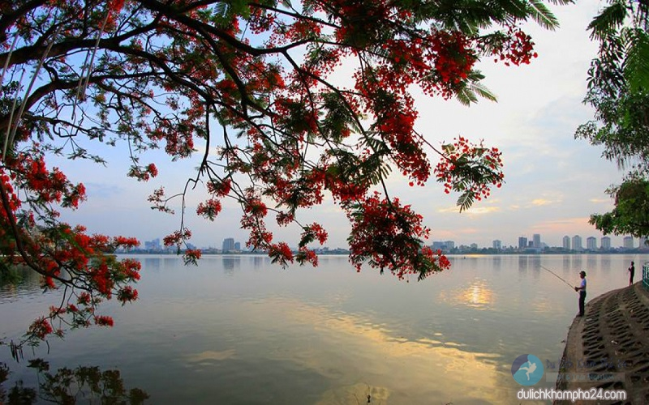

Hẳn bạn đã nghe rất nhiều về Hà Nội – Thủ đô hơn 1000 năm tuổi. Không chỉ nổi tiếng với lịch sử lâu đời, giàu bản sắc, văn hóa truyền thống dân tộc, vùng đất này còn được biết đến là một trong những địa điểm thu hút nhiều du khách trong và ngoài nước. Với bài viết giới thiệu về Hà Nội này, chắc chắn bạn sẽ yêu ngay những thứ mà nó có, từ văn hóa, phong tục tập quán, con người, nhịp sống cho đến cảnh vật và cả nền ẩm thực hấp dẫn mà không nơi nào có được.
Những danh lam thắng cảnh nổi tiếng
Lăng Chủ tịch Hồ Chí Minh
Lăng Chủ tịch Hồ Chí Minh là nơi giữ gìn thi hài Bác – người cha già kính yêu của dân tộc. Lăng được khởi công xây dựng vào ngày 2/9/1973 và hoàn thành vào ngày 19/8/1975. Công trình ngày cao 21,6 m, rộng 41,2 m, được làm hoàn toàn bằng nhiều loại đá quý hiếm khác nhau. Nhìn tổng thể, lăng như một bông hoa sen cách điệu. Lăng trở thành một điểm đến nổi tiếng mà bất kỳ ai khi đến du lịch Hà Nội đều muốn ghé thăm. Đến đây du khách không chỉ được chiêm ngưỡng kiến trúc đặc biệt này mà còn được tận mắt nhìn thấy Bác đang yên giấc ngủ.
Văn Miếu – Quốc Tử Giám
Đây vốn là trường học cổ của Kinh Thành Thăng Long và trường đại học đầu tiên ở Đông Nam Á. Văn Miếu không chỉ là một di tích lịch sử, văn hóa cổ mà còn là nơi diễn ra các hoạt động, sự kiện đậm đà bản sắc của người dân Thủ đô. Bên trong còn lưu giữ nhiều hiện vật quý như: chuông Bích Ung đại chung, tường Khổng Tử 82 bức bia ghi tên những người đỗ Tiến sĩ,… Nếu bạn là người yêu thích lịch sử Hà Nội và muốn tìm hiểu về văn hóa học thời xưa thì đây là một địa điểm lý tưởng.

Hồ Tây – mặt gương của Hà Nội
Hồ Tây có diện tích rộng hơn 500 ha với bề dày lịch sử mấy nghìn năm. Cùng với hồ Trúc Bạch, Hồ Tây góp phần làm nên chất thơ cho thành phố. Theo mình thì, nếu dạo một vòng quanh hồ, bạn sẽ được thăm thú kha khá các di tích và thắng cảnh. Làng Nhật Tân với hoa đào nợ rộ khi xuân về, làng Xuân Tảo với Sóc thờ Thánh Gióng, làng làm giấy cổ tích Kẻ Bưởi,… và một số công trình được xây dựng quanh hồ làm quanh cảnh thêm đa dạng.

Nơi ẩm thực ghi dấu ấn
Chả cá Lã Vọng: Chả cá Lã Vọng đã trở thành đặc sản nổi tiếng của đất Thủ đô với cách chế biến công phu, tỉ mỉ. Chả được làm từ cá lăng, lọc thịt tẩm ướp gia vị rồi đem nướng. Muốn ngon bạn phải ăn nó khi còn nóng, khi ăn sẽ kèm với bún, bánh đa nướng, rau thơm, lạc rang, hành củ và chấm với mắm tôm.
Bún chả Hà Nội: Là món ăn quen thuộc của người dân ở đây, cũng là món ăn nhận được rất nhiều lời khen từ du khách gần xa nhờ phong vị đậm chất truyền thống.
.jpg)